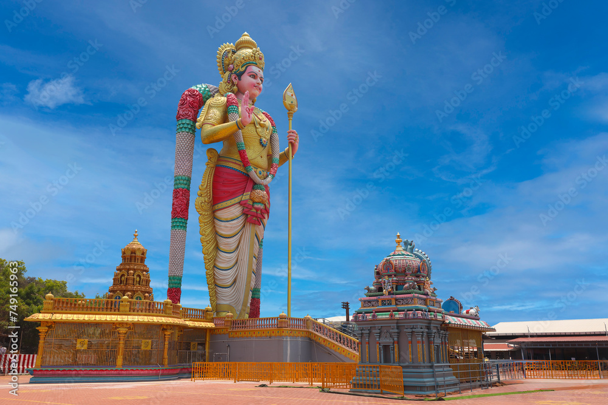

Per legend, the Muthu Malai Murugan Temple stands where Lord Murugan materialized before sage Muthu during his meditation, earning it its name. In the 18th century, the Marudhu Brothers, devoted local leaders, oversaw substantial renovations, safeguarding the temple against invaders. British control emerged in the 19th century, prompting further enhancements and additions to the complex. British oversight continued until India’s 1947 independence. The temple’s present form reflects cumulative renovations, with the most recent concluded in 2010. The Tamil Nadu government’s Hindu Religious and Charitable Endowments Department manages the temple.
